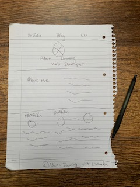

Building my portfolio site has definitely been the hardest challenge throughout my time at university. Up until this point I had never created a fully functioning website by myself, the only thing that comes to close to this would be a few individual web pages or practicing certain practices such as CSS Flexbox or Grid.
Research
To begin with I was finding it hard to create a general design from scratch, so to give myself some guidance I carried out some research. In the hope of sparking an idea I began to analyse various website developer’s portfolio sites, with a number standing out to me such as ‘Robot-food’, ‘Sagmeister & Walsh’ and ‘b14’. One thing I found in common with these sites was the simple use of colours like black and white, which funnily enough best describes my taste in clothes as well, so I thought using a similar colour scheme would be suitable.
Due to the gap between the last time I had coded and starting this challenge I found that I was a bit rusty around the edges, because of this I spent quite a bit of time re-teaching myself how to use CSS and HTML. The way in which I did this was by using materials from my previous years at university and watching online courses from LinkedIn Learning, this combination alongside continuous practice allowed me to pick up the basics very quickly and I found myself getting back into the swing of things.
Design
In the first stages of design I found it easier to hand-draw very basic designs, which allowed me to produce them quicker than using computer aided software, although this is just a personal preference. After producing a number of initial sketches, I was then able to single down my favourite elements from each design and bring together these elements to create a final design. According to Shcmitz (2017) one common mistake manufacturers make is focusing on one concept design too early and rushing to get designs into the detailed design stage. This is why I tried to illustrate as many initial designs as possible first, so I had a much greater variety of options when it came to my final design.
I took inspiration from a website such as 'Pentagram' which gave me a minimalist look and I thought a simple, skinny font like ‘Roboto’ and ‘ZCOOL XiaoWei’ would further help to compliment this design idea, after testing the fonts I decided that the text looked to clustered so I spaced it out to help the user read.
Build
With the research and design stages completed I was able to progress to the actual construction of the website. To begin with I added all of the HTML elements that I would need on my home page, I soon found it easier to complete one web page at a time as I found myself trying to tackle too many things at once and getting myself confused. After finalising all of the HTML I then applied CSS to style it in the way I wished, keeping my screen at a small resolution which allowed me to work in a mobile-first way. Carrying out the build in this way was essential for the end product being responsive and being able to accommodate almost every resolution and screen within reason. The way in which I made it responsive was by adding media queries and it was rather rewarding to see the elements on the screen shifting around as I resized the screen.
Once I’d finalised the home page, which also included my portfolio and contact form and having refreshed my basic website developer skills, I then tackled my blogs page, which I have to say I’m quite proud of. I added the ladder effect by adding a gradual margin to each individual grid containers. I decided not to add the blog pages onto the home page as I didn’t want the user to have to scroll down far, especially on mobile which would create some usability issues. Also, I didn’t intend on using a drop-down sub-menu within the navigation bar as this can block content and yet again be a pain to use on a smaller device. As for my CV I decided that this also needed its own page as there is a lot of content.
References:
- B14 Website. 2019. [ONLINE] Available at: http://b14.dk/ . [Accessed on 10th Ocotber].
- Linked In Learning Website. 2019. [ONLINE] Available at: https://www.linkedin.com/learning/paths/become-a-front-end-web-developer?u=36102708 . [Accessed on 30th September].
- Pentagram Website. 2019. [ONLINE] Available at: http://www.pentagram.com/#/home .[Accessed on 10th Ocotber].
- Robot Food Website. 2019. [ONLINE] Available at: http://www.robot-food.com/ . [Accessed on 10th Ocotber].
- Sagmeister and Walsh Website. 2019. [ONLINE] Available at: http://sagmeisterwalsh.com/ . [Accessed on 10th Ocotber].
- Schmitz, B. (2017). The Importance of Concept Generation in the Early Phase of Design. [ONLINE] Available at: https://www.ptc.com/en/cad-software-blog/what-a-concept-the-importance-of-the-early-phase-of-design . [Accessed on 11th Ocotber].